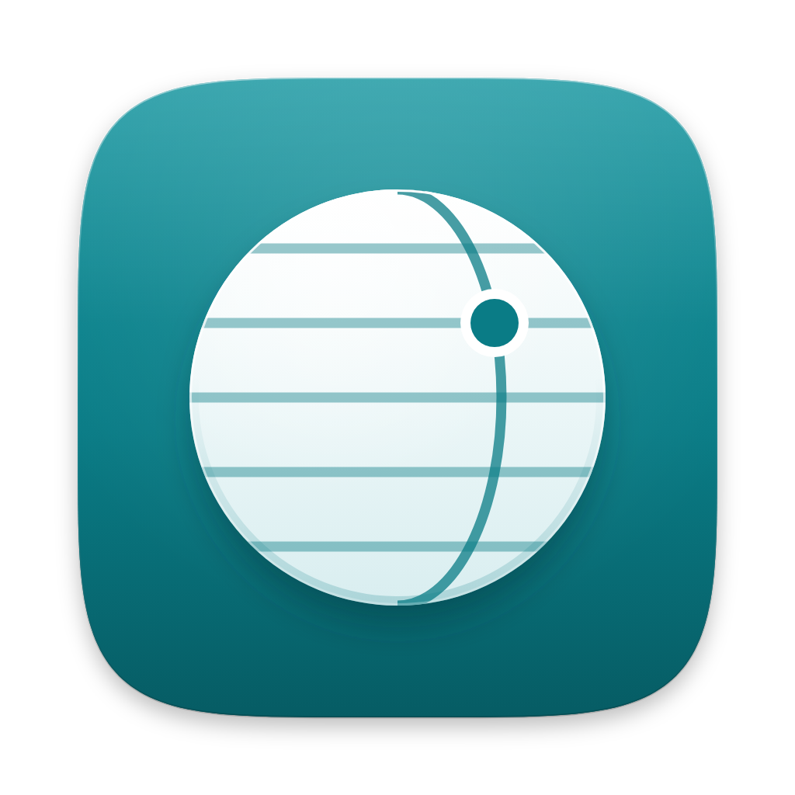
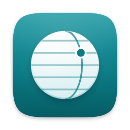
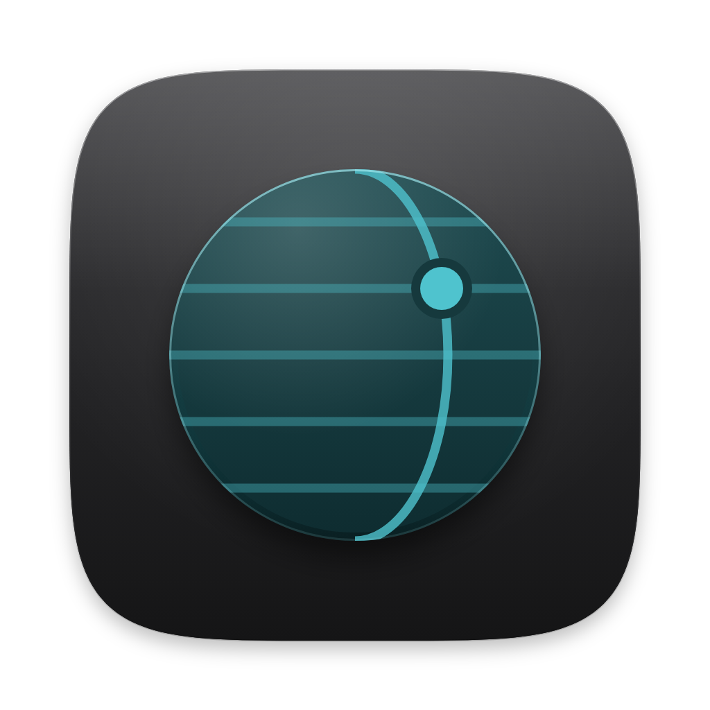

App icon · light


App icon · on dark, and dark appearance

Mark, wordmark, menu bar · light
Mark, wordmark, menu bar · dark
Palette · light / dark
Window#fbfbfa / #1c1c1e
Text#1d1d1f / #f5f5f7
Accent · Atlas teal#0a7c86 / #4fc3ce
Money in#1f8a55 / #4cc985
Over budget#c2412d / #ff7a66
Icon field#14959f→#065c64 / #3a3a3d→#151516
Type · SF Pro, tabular figures